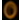
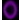

● メインメニュー画面 メインメニュー画面で以下のいずれかをポイントして選び、で決定してください。
・メインゲーム（→P.12） 挑戦するチャプターの全ステージにおいて、クリアをめざします。「チャプター1～4」または「エピローグ」を選ぶと、マップ画面に進みます。
・ボーナスゲーム（→P.13） メインゲームを進めると、選べるようになります｡メインゲームのステージクリア時に獲得した「タワーに送れるグー」を使って、どれだけ高いタワーを作れるか挑戦します。 なお、ニンテンドーWi-Fiコネクションに接続してボーナスゲームをプレイすると、自動で世界中のプレイヤーと記録のやりとりが行われます。
・セーブデータ ゲームの進行状況を保存するセーブデータを選ぶことができます。セーブデータを変更する場合は変更したいデータを選んでを押してください。セーブデータは3つまで作成できます。
※初めてプレイしたときは、一番上のセーブデータが自動的に選ばれています。
※セーブについてP.9もあわせてご覧ください。
● 協力プレイについて このゲームでは、複数のWiiリモコンを登録すると、最大4人で協力プレイができます。協力プレイをする場合は、人数分のWiiリモコンをWii本体に接続してください。 なお、ゲーム内でのプレイ人数の設定は必要ありません。ゲームの途中でもWiiリモコンを接続すれば、すぐに参加できます。
※Wiiリモコンの設定や接続については、Wii本体取扱説明書の機能編「Wiiリモコンの設定画面」をご覧ください。
・各プレイヤーのカーソル 自分が操作するカーソルは、色で判断してください。カーソルの色は、 1P：、2P：、 3P：、4P：です。
※どのプレイヤーでも メニューを選べますが、ステージ画面では、1Pのみ画面をスクロールしたり、操作を一手戻す（→P.11）ことができます。